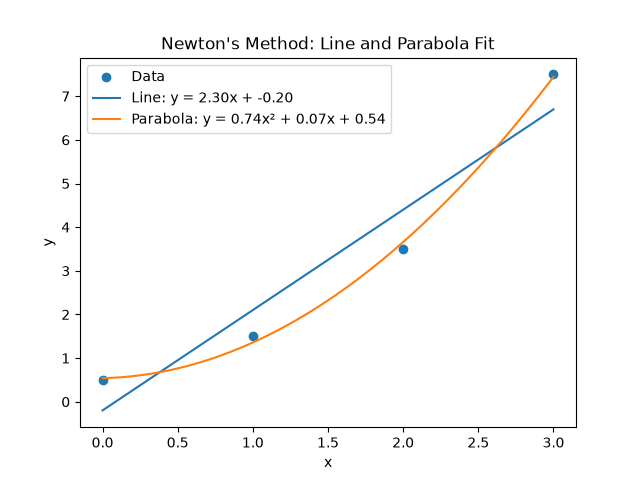

Example 01

This assignment investigates the shortest distance between a point (x₀, y₀) and a nonlinear function f(x). Two numerical optimization methods are used: Newton-Raphson and Golden-Section Search.
Newton-Raphson is a numerical optimization method that uses the first and second derivatives of an objective function to find a stationary point. In this assignment, it is used to minimize the distance between a point and a function.
For a point (x₀, y₀) and a function f(x), the squared distance is:
Minimizing the squared distance gives the same location as minimizing the actual Euclidean distance, while avoiding the square root during optimization.
Newton's method finds a stationary point by solving:
Starting from an initial guess x₀, the Newton update is:
The process is repeated until the change between successive estimates is smaller than the specified tolerance.


Golden-Section Search is a derivative-free optimization method. Instead of using derivatives, it evaluates the objective function at points inside a bounded interval and progressively reduces that interval.
The method uses the golden ratio to determine the locations of the interior points:
At each iteration, the algorithm compares the objective function values at the two interior points. The portion of the interval that cannot contain the minimum is discarded.


Therefore, the two methods approach the same distance-minimization problem differently. Newton-Raphson uses local derivative information to move toward a stationary point, while Golden-Section Search uses function values to progressively reduce a bounded search interval.
```The second part of the assignment fits a line and a parabola to a set of data points by minimizing the mean squared error (MSE).
The data points used for the fitting problem are:
For a model prediction ŷ, the mean squared error is defined as:
The objective is to find the model parameters that minimize this error.
The line is represented by:
The MSE is minimized with respect to the two parameters, a and b. Newton's method uses the gradient and second derivative to update each parameter.
The parameters are updated one at a time. First a is updated, then b is updated using the newly updated value of a. This process is repeated for several iterations.
The parabola is represented by:
The three parameters are updated sequentially using their corresponding scalar gradients and second derivatives:
Similar to the line fitting procedure, the parameters are updated one at a time. The update of each parameter uses the most recently updated values of the other parameters.
The resulting line and parabola are shown together with the original data points below.

The plot shows how both models fit the same set of data points. The parameters are obtained by iteratively minimizing the MSE using one-parameter-at-a-time Newton updates.